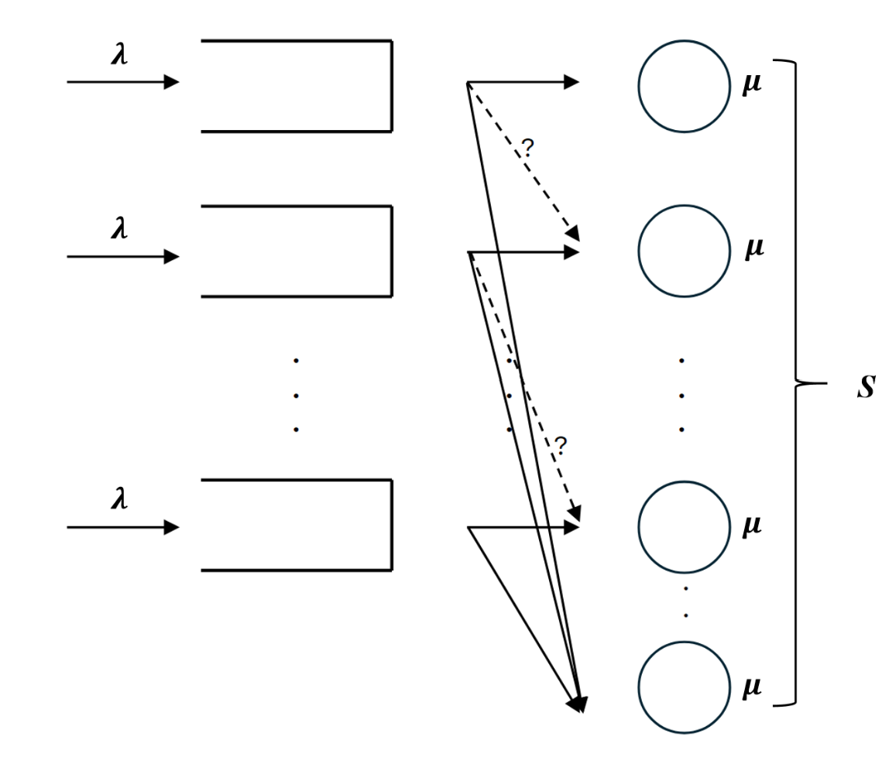
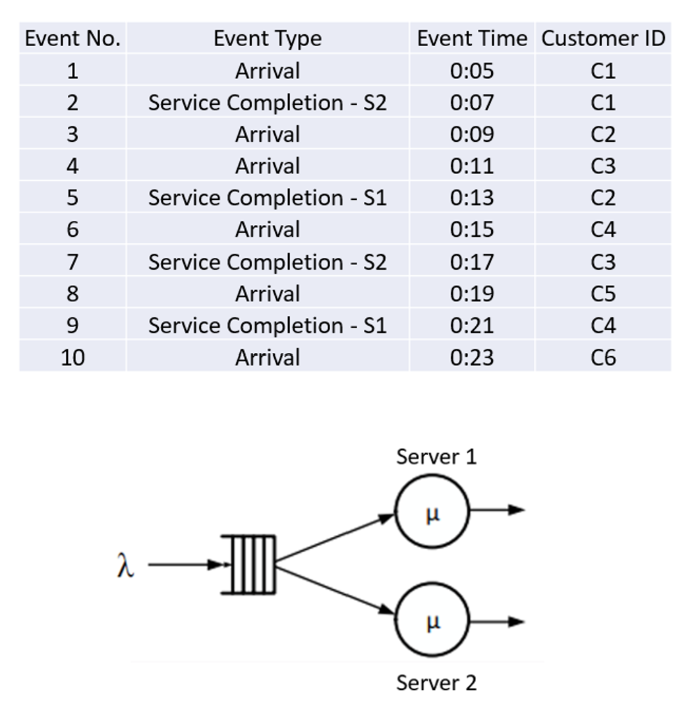
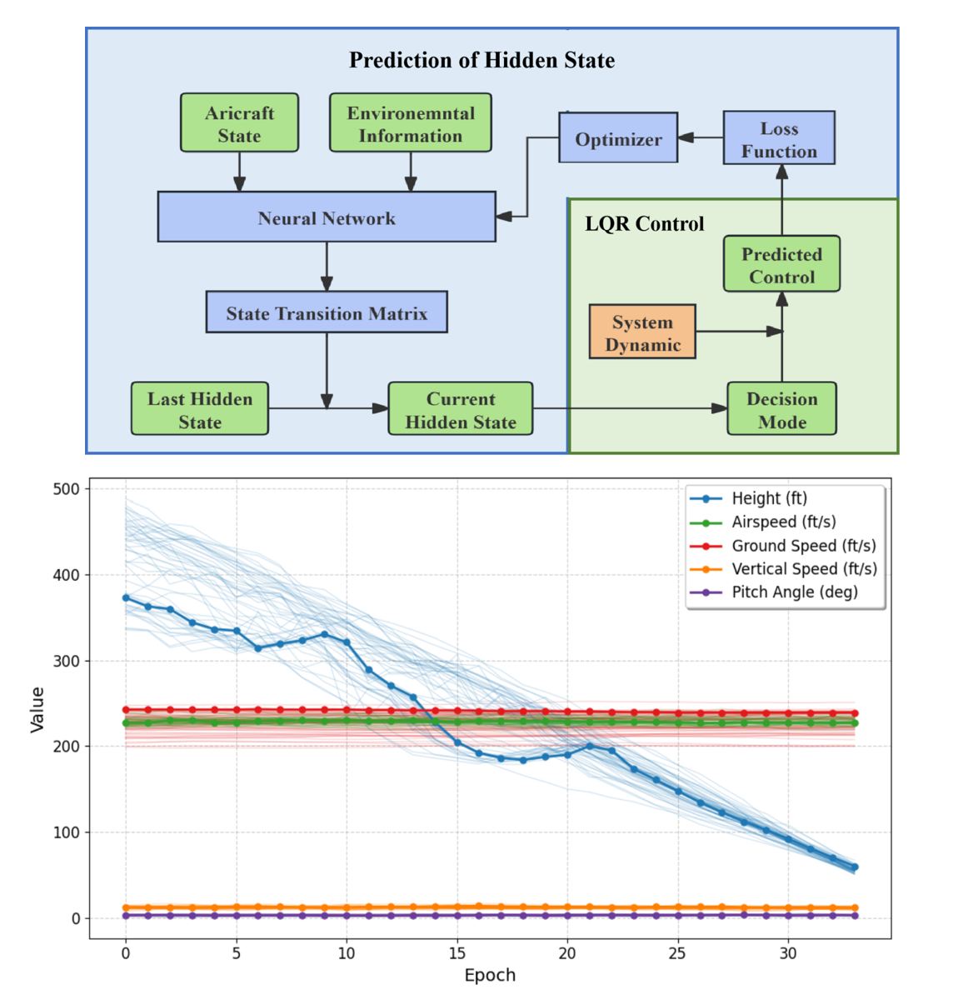
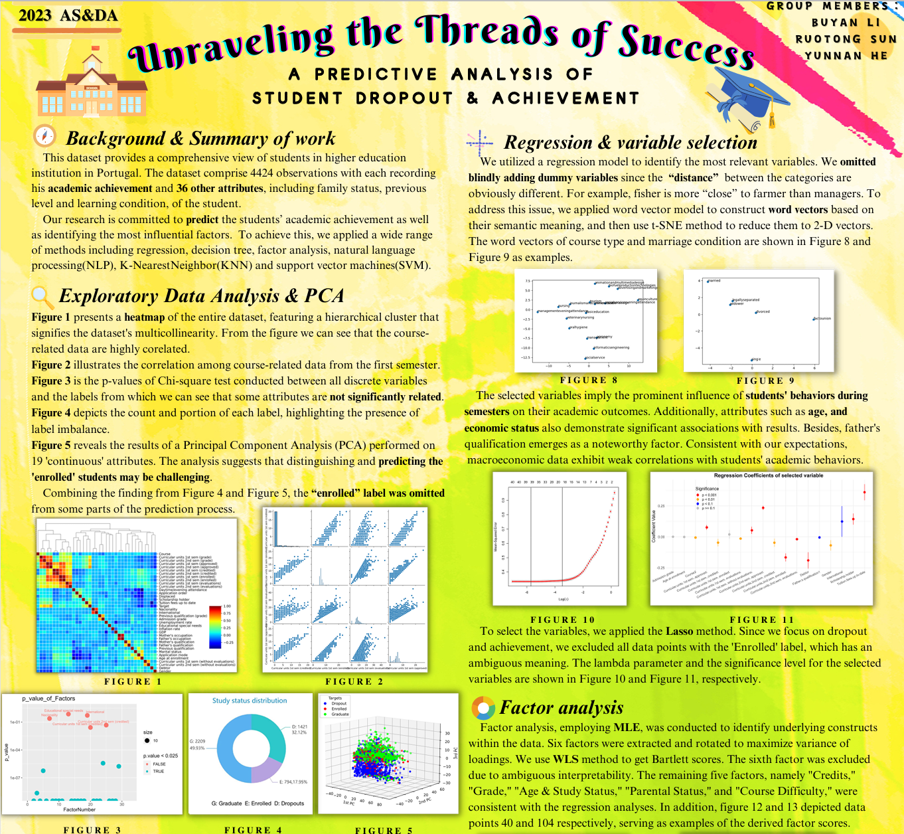
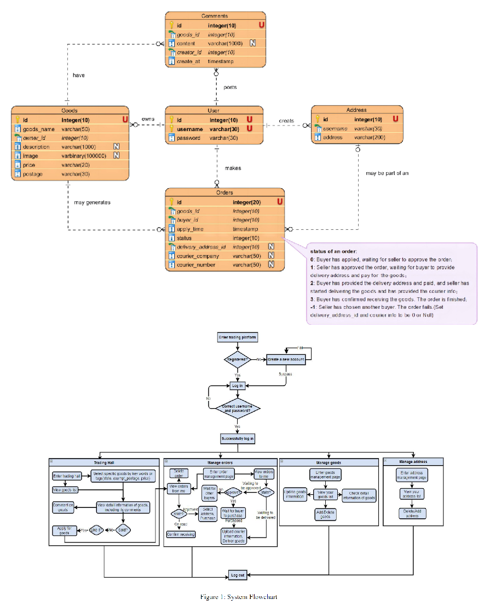

|
Yunnan He Hi, I'm a senior graduate student at Tsinghua University, majoring in Mathematics and Physics + Industrial Engineering. I'm passionate about research and problem-solving in complex systems. ContactEmail: heyn21@mails.tsinghua.edu.cn Tel: +86 189-8279-0291 Addr.: No.30 Shuangqing Rd., Haidian District, Beijing, China |

|
Research ExperienceI'm interested in stochastic modeling, data-driven decision-making, Healthcare Operations Management |
|  |
Research Assistant at Stanford University
Jul. 2024 - Oct. 2024
Advisors: Prof. Yue Hu
Project: Flexibility Design with Strategic Patients and Continuum-of-Care Rewards
This project involves designing flexible healthcare systems that optimize patient care under strategic decision-making constraints, focusing on how patients' behaviors interact with system resources. The research aims to develop dynamic models that enhance care continuity and patient satisfaction while managing resource utilization efficiently. |
|  |
Research Assistant at Columbia Business School
Feb. 2024 - Present
Advisors: Prof. Jing Dong, Prof. Hongseok Namkoong
Project: Data-Driven Stochastic Modeling Using Autoregressive Sequence Models
This project focuses on developing data-driven stochastic models to predict and analyze time-series data. The goal is to apply autoregressive sequence models to better understand patterns in business and economic systems, improving decision-making in environments characterized by uncertainty and dynamic changes. |
|  |
Independent Research at Tsinghua University
Oct. 2023 - Present
Advisor: Prof. Chen Wang
Project: Modeling Sequential Decision-Making Behaviors Based on Control Data of Aircraft Pilots
This research aims to model and analyze sequential decision-making behaviors of aircraft pilots in complex environments. By using control data, the project seeks to understand how pilots respond to dynamic situations and make real-time decisions. The goal is to develop models that can enhance pilot training and improve aviation safety. |
ProjectsI'm interested in stochastic modeling, data-driven decision-making, Healthcare Operations Management |
|  |
A Predictive Analysis of Students’ Dropout and Achievement
Project in Course Applied Statistics and Data Analytics
Apr. 2023 - Jun. 2023
This project focused on predicting student dropout and achievement using various machine learning methods such as SVM, KNN, and Random Forest for classification. I led the team in preprocessing raw datasets, visualizing the data using heat-maps and 3D scatter plots, and performing data standardization. I also fine-tuned the SVM model with Grid Search, improving its accuracy from 65% to 90%. Check out our poster! |
|  |
Online Second-Hand Trading Platform
Project in Course Database Concepts
Apr. 2023 - Jun. 2023
This project focused on building an online second-hand trading platform, where users can buy and sell used goods. I contributed to the development of the platform’s database, designing the structure for user profiles, item listings, and transaction histories. Additionally, I worked on the back-end features, including search functionality and filtering based on item categories. Check project detailsTry our demo website! |
Miscellanea |


|
Feel free to steal this website's source code. Do not scrape the HTML from this page itself, as it includes analytics tags that you do not want on your own website — use the github code instead. Also, consider using Leonid Keselman's Jekyll fork of this page. |